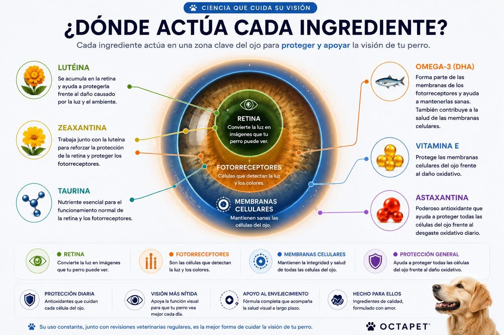
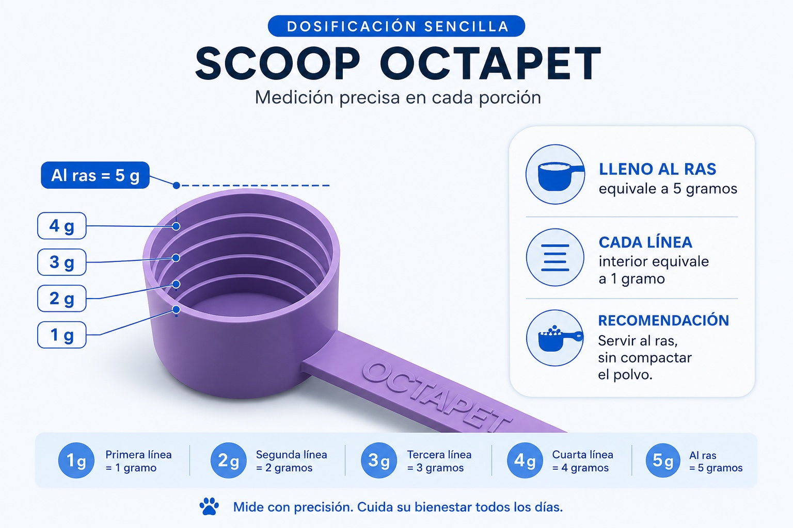

Cuidado diario
Nutrientes pensados para acompañar el bienestar visual en cada etapa.
Antioxidantes y nutrientes seleccionados para acompañar el cuidado diario de los ojos.
Conocer la fórmulaNutrientes pensados para acompañar el bienestar visual en cada etapa.
Ayudan a proteger las células frente al estrés oxidativo cotidiano.
Luteína, zeaxantina, astaxantina, taurina, vitamina E y omega-3.
Polvo para mezclar directamente con el alimento de todos los días.
No existe una sola edad ni un porcentaje universal de pérdida visual en perros: depende de la raza, la enfermedad y sus antecedentes. Estos datos ayudan a dimensionar algunos riesgos concretos sin generalizar.
Reportada en un estudio clínico de perros de razas pequeñas con cataratas.
Ver estudioPrevalencia anual observada en más de 104 mil perros; en Pug alcanzó 5.42%.
Ver estudioEn una cohorte, cerca del 80% desarrolló cataratas dentro de los 16 meses posteriores al diagnóstico.
Ver estudioDiseñado para integrarse a la rutina diaria de perros que necesitan un cuidado ocular constante y preventivo.
Para acompañar los cambios naturales relacionados con la edad.
Como apoyo nutricional en perros con mayor sensibilidad ocular.
Para quienes pasan tiempo al aire libre y están expuestos al ambiente.
Para comenzar a cuidar antes de que aparezcan cambios visibles.
Una combinación de carotenoides, antioxidantes y nutrientes que trabajan en conjunto para acompañar la salud ocular.
Carotenoide proveniente de extracto de cempasúchil que forma parte del sistema antioxidante natural del ojo.
Carotenoide relacionado con la protección de las estructuras oculares frente a la luz y al estrés oxidativo.
Antioxidante de alta potencia que complementa la acción de la luteína y la zeaxantina.
Aminoácido importante para distintos tejidos, incluida la retina y el sistema nervioso.
Antioxidante liposoluble que ayuda a proteger las membranas celulares frente al daño oxidativo.
Fuente de ácidos grasos que forman parte de las membranas celulares y del tejido nervioso.

Cada ingrediente fue seleccionado para cubrir una función complementaria: soporte de retina y fotorreceptores, integridad de membranas celulares y protección antioxidante general.
Cada línea interior equivale a 1 gramo y el scoop lleno al ras equivale a 5 gramos.

Selecciona su peso para conocer la dosis diaria y cuánto rendirá una bolsa de 150 g.
Presentación pensada para rendir 30 días en un perro de 20 a 30 kg.
Lleno al ras equivale a 5 gramos.
Cada línea permite medir incrementos de 1 gramo.
Una porción diaria, sin administrar varios premios o cápsulas.
Gordi siempre tuvo unos ojos muy delicados. Desde que la adoptamos sabíamos que requerían cuidados especiales y, conforme fue envejeciendo, comenzó a perder parte de su visión. Nunca pudimos saber con certeza la causa; creemos que existía una predisposición desde mucho antes de llegar a nuestra familia.
Aquella experiencia nos hizo entender algo importante: muchos problemas oculares avanzan de forma silenciosa y, cuando los primeros signos son evidentes, parte del daño puede ser irreversible.
Por eso desarrollamos Salud Visual. No con la idea de reemplazar un tratamiento veterinario, sino de ofrecer un suplemento diseñado para acompañar el cuidado diario de los ojos con ingredientes seleccionados a partir de la evidencia disponible.
No. Es un suplemento alimenticio de apoyo nutricional y no sustituye el diagnóstico ni el tratamiento indicado por un médico veterinario oftalmólogo.
Puede utilizarse como parte de una rutina de cuidado preventivo, siempre respetando la cantidad indicada para su peso y condición.
Los suplementos nutricionales requieren constancia. El objetivo no es generar un cambio inmediato visible, sino acompañar el cuidado ocular a mediano y largo plazo.
Si tu perro recibe medicamentos, tiene una enfermedad crónica o está bajo tratamiento ocular, consulta con su veterinario antes de iniciar.
No. Los cambios de visión, enrojecimiento, dolor, secreción, pupilas diferentes o choques con objetos requieren valoración veterinaria.
Una fórmula antioxidante para integrar el bienestar ocular a su rutina diaria.